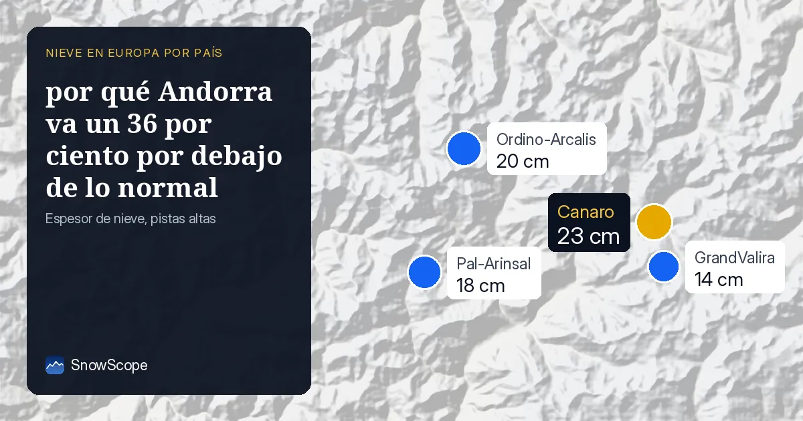
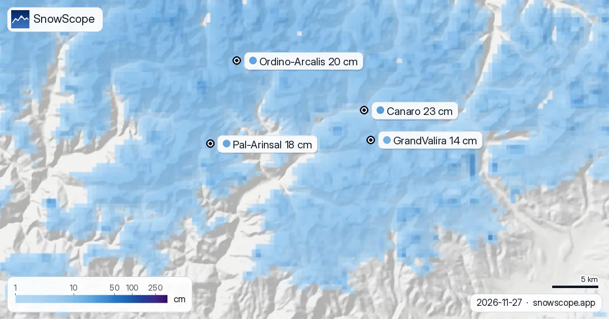

Canaro tiene 23 cm: por qué Andorra va un 36 por ciento por debajo de lo normal
Canaro tiene 23 cm de nieve hoy, solo el 64 por ciento de lo que las montañas suelen acumular en estas fechas. Los últimos tres días trajeron 16 cm a toda la estación, pero Andorra sigue un tercio por debajo de lo normal—un recordatorio de que la nieve de principios de temporada es fina y frágil.
Consulta la previsión de nieve en tiempo real de Canaro en la app SnowScopeEspesor de nieve, alertas de nieve polvo y mapa 3D, gratis.
Por qué Canaro rezaga respecto a lo normal
La profundidad de nieve en Canaro cuenta una historia clara. Con 23 cm, la estación está 13 cm por debajo del promedio de noviembre de 36 cm. Este déficit refleja dos cosas: la temporada llegó tarde, y la cobertura de nieve en Andorra solo comenzó a acumularse la semana pasada. Hace una semana, Canaro tenía casi nada de nieve; hoy tiene solo dos terceras partes del agua que debería almacenar en estas fechas.
La comparación importa para los gestores de embalses y planificadores de agua río abajo. Cuando la nieve llega tarde y es escasa, el deshielo primaveral alimenta los ríos después y con menos volumen. Ahora mismo, los picos más altos de Andorra almacenan unos 10 cm de nieve en promedio por encima de 2500 m, pero las laderas más bajas siguen casi desnudas.
| Resort | Today | Normal for the date | Share of normal |
|---|---|---|---|
| Canaro | 23 cm | 36 cm | 64 % |
| Ordino-Arcalis | 20 cm | 22 cm | 91 % |
| Pal-Arinsal | 18 cm | 20 cm | 90 % |
| GrandValira | 14 cm | 16 cm | 88 % |

Cómo Andorra se compara con lo normal
Las cuatro estaciones andorranas están por debajo de sus profundidades típicas de noviembre. Ordino-Arcalis tiene 20 cm frente a los 22 cm típicos, Pal-Arinsal tiene 18 cm versus 20 cm, y GrandValira está en 14 cm en lugar de 16 cm. Solo Ordino-Arcalis casi mantiene el ritmo; las otras rezagan entre un 10 y un 20 por ciento.
En todo el país, el 84 por ciento del área cartografiada ahora tiene cobertura de nieve—un salto dramático desde solo el 5 por ciento hace una semana. Ese crecimiento rápido oculta un problema más profundo: el manto de nieve es fino y está concentrado en altitud. Por debajo de 2000 m, la mayoría de las laderas están desnudas. La línea de nieve está en 1600 m, dejando las estaciones más bajas vulnerables a cualquier deshielo.

Qué traerán los próximos tres días
La nieve fresca será modesta. Canaro debería ver solo 1 cm en los próximos tres días, Ordino-Arcalis 2 cm, y las estaciones más bajas alrededor de 1 cm cada una. El día más nevado por delante es el 3 de diciembre, con 2 cm posibles en partes de Andorra. Este goteo no cerrará la brecha respecto a lo normal.
La perspectiva más larga—días 8 a 14 adelante—insinúa nieve más sustancial, con hasta 18 cm posibles. Esa ventana ofrece una oportunidad para construir el manto, pero hasta entonces Andorra seguirá donde está ahora: nieve magra de principios de temporada aferrada a los picos altos.
Profundidad de nieve por altitud
La elevación lo define todo ahora. Por encima de 2500 m, la nieve promedia 10 cm y cubre cada ladera. Entre 2000 y 2500 m, promedia 9 cm y está casi completa. Pero la historia se quiebra más abajo: entre 1500 y 2000 m, solo hay 4 cm en el 86 por ciento del área, y por debajo de 1500 m, el terreno desnudo domina con solo el 6 por ciento de cobertura blanca.
Para los esquiadores, esto significa esquiar sobre nieve fina en las laderas medias y encontrar roca y vegetación debajo. Los picos superiores ofrecen el terreno más seguro, pero las profundidades siguen siendo modestas. Cada centímetro cuenta cuando la base es tan frágil.
Dónde encontrar la mejor nieve ahora
Canaro lidera Andorra con 23 cm, manteniendo su ventaja gracias a 16 cm de nieve fresca en los últimos tres días y su altura de 2500 m. Ordino-Arcalis le sigue con 20 cm y está más alto a 2626 m; también recibió 20 cm de nieve fresca en tres días, lo que la hace competitiva. Los picos andorranos como grupo recibieron hasta 20 cm en ese período, así que el terreno alto es donde está el agua.
GrandValira, la más baja de las cuatro, tiene solo 14 cm. Será la última en consolidarse y la primera en sufrir si las temperaturas suben. Pal-Arinsal, con 18 cm, cae entre los dos líderes y la estación de valle.
La semana que construyó la base
Hace una semana, Andorra casi no tenía nieve. El 25 de noviembre, las montañas tenían 420 km² de blanco—un salto impulsado por una banda de tormentas que cruzó la región. La cobertura de nieve se redujo ligeramente a 400 km² el 26 de noviembre mientras el sistema se relajaba, luego se estabilizó en 370 km² hoy mientras algo de nieve se consolidaba o se fundía en elevaciones más bajas.
Canaro se mantuvo estable cerca de la cima de esa tendencia, bajando y recuperándose mientras el clima cambiaba. Esta volatilidad es normal para noviembre: la nieve de principios de temporada está débilmente adherida y es sensible a pequeños cambios de temperatura. La buena noticia es que hay aire frío en su lugar. El desafío es que aún no hay mucha nieve para proteger.
Consejos para esquiadores
- Mantente en laderas por encima de 2000 m donde la nieve es continua. Por debajo de esa altura, los parches desnudos y las rocas son comunes, y la nieve es fina.
- Canaro y Ordino-Arcalis ofrecen las bases más profundas y estables; planifica tus descensos en su terreno superior primero.
- Principios de temporada significa unión débil y estabilidad variable. Consulta el boletín oficial de aludes antes de salir de las pistas marcadas.
- Espera deshielo durante días cálidos, especialmente en laderas orientadas al sur y por debajo de 2000 m. Esquía temprano y alto.
- Observa el pronóstico para la semana del 5 al 11 de diciembre; si llegan 18 cm como sugiere el rango, el manto se fortalecerá rápidamente.
Sobre estas cifras
Los espesores de nieve de las estaciones son la nieve más profunda en las pistas altas en la fecha indicada; son estimaciones para una zona, no una medida en un punto. Las previsiones pueden cambiar. Consulta siempre el boletín oficial de aludes antes de salir fuera de pista.
Citar este informe
Para investigación, docencia o prensa: cifras y gráficos reutilizables libremente bajo CC BY 4.0 con esta cita.
SnowScope (2026), Canaro tiene 23 cm: por qué Andorra va un 36 por ciento por debajo de lo normal, https://snowscope.app/blog/es/2026/11/andorra-snow-behind-normal-27-november-2026.html, consultado el 2026-11-27
SnowScope (Atlas Labs). (2026, November 27). Canaro tiene 23 cm: por qué Andorra va un 36 por ciento por debajo de lo normal. SnowScope snow reports. https://snowscope.app/blog/es/2026/11/andorra-snow-behind-normal-27-november-2026.html
BibTeX
@misc{snowscope2026andorrasnowbehindnormal2,
author = {{SnowScope (Atlas Labs)}},
title = {Canaro tiene 23 cm: por qué Andorra va un 36 por ciento por debajo de lo normal},
year = {2026},
month = nov,
howpublished = {\url{https://snowscope.app/blog/es/2026/11/andorra-snow-behind-normal-27-november-2026.html}},
note = {Published 2026-11-27 11:58 UTC; accessed 2026-11-27}
}· CC BY 4.0 · Métodos, datos y herramientas →
Canaro: nieve y temperatura según la altura, este invierno vs el pasado (herramientas) →
Sigue Canaro
Gratis: un aviso cuando llega la nieve y la previsión cada mañana.